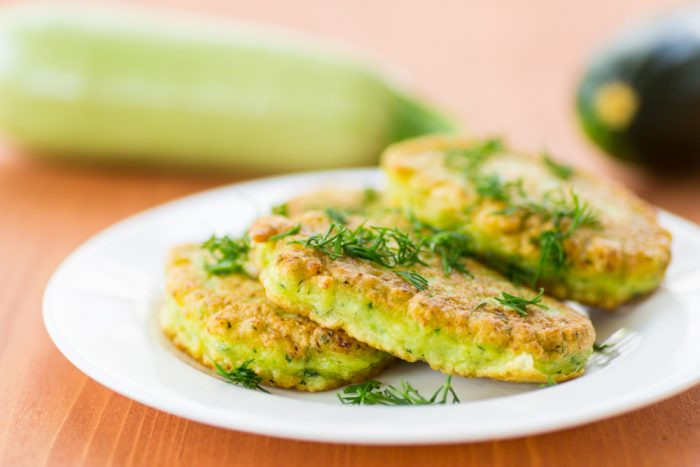

Quelle recette pour quel repas?
Attention les recettes que nous vous recommandons ne sont pas substituables à une prescription médicale, si les symptômes persistent contactez un professionnel.
Veuillez clicker sur l'image qui correspond à votre recherche de recette.


Les recettes à la une

Pancakes à la courgette
Indispensable du brunch dominical, délicieusement fluffy.
Purée de patate douce
Pour cette recette, vous pouvez compter 10 minutes de préparation.

Sandwiches à l'avocat et aux figues
Un sandwich sucré salé pour ceux qui aiment sortir des sentiers battus.